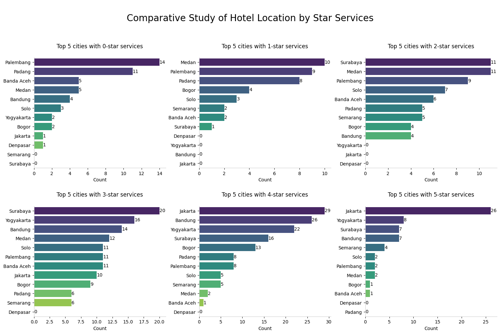

Traveloka Indonesia New Year Hotel Rooms

by Muhammad Reyhan Arighy Data Scientist
Business Problems
The hotel industry faces the challenge of optimizing customer satisfaction and revenue generation in an increasingly competitive market. This challenge is driven by several key issues:
Data Understanding and Preparation
At this stage, Data Understanding is performed with the aim of gaining a deeper understanding of the data characteristics being analyzed before getting into Explanatory Data Analysis. Some steps of preparation are conducted as a slight cleanse process, those are data formatting, duplicates, outliers detections, and missing values. For the research purpose, please directly go through this link for dataset source.
Explanatory Data Analysis
Discrepancy Analysis of Multi-Services Hotel
Additional Notes:
Despite the notable variations in normal rates per night observed among multi-service hotels, it's essential to highlight that no distinct set of features has been identified as the cause for these differences. This underscores the need to consider this information carefully in our subsequent analyses. Furthermore, when it comes to other attributes associated with each hotel, such as star services, ratings, and the number of reviews, there are no discernible differences. These attributes remain consistent for hotels, irrespective of whether they offer multi-services or not.
Proportion of Hotel Availability Analysis
The visualization presented above underscores Jakarta as the highest total hotel count. Notably, this trend extends beyond Jakarta, as other major urban centers closely follow in terms of hotel quantity. This observation paints a picture of Indonesia's hospitality sector, characterized by a well-distributed presence. It's worth mentioning that the top five cities on this list are also home to a various of tourist landmarks, further emphasizing the strategic importance of the hotel industry in catering to diverse influx of visitors.
Hotel Popularity Infographic Accross Cities
Geolocation of Hotel Accross Platform
With the aid of Folium and its plugins, we have the capability to craft detailed geolocation maps. These maps not only pinpoint the exact locations of specific hotels but also enrich the visualization with additional information about these hotels, such as their names, star services, ratings, features, and more. This interactive approach offers an immersive and informative way to explore and analyze hotel data, enhancing our ability to gain deeper insights into the hospitality industry.
Total Count of Hotel Location by Star Services
The visual representation presented above serves as supplementary information, shedding light on cities that boast the highest total hotel counts based on star service criteria. By discerning which star service classifications are most prevalent in a given city, we can embark on a more comprehensive analysis of the economic and demographic factors that might be influencing these trends. For instance, we can investigate whether cities with a higher concentration of luxury hotels tend to have a more affluent population or attract a specific type of tourist demographic. Conversely, we can explore the dynamics of budget hotels in cities that emphasize cost-conscious travel.
Distribution of Normal Rate per Night by Location
The visualization presented above represents an advanced layer of information that complements the previous plot. It provides a comprehensive view of several key aspects:
The interplay of these factors hints at the economic profile of a city and various factors that influence hotel pricing, including the presence of tourist landmarks, business centers, and the city's appeal as a holiday destination.
However, it's essential to note that this information is specific to the Traveloka platform and may not represent all hotels in a given city, as not all hotels may be affiliated with the platform. Therefore, while this data provides valuable insights, it's crucial to consider it within the context of Traveloka platform.
Distribution of Hotel Discounts by Star Services
The provided visualization offers valuable insights:
Distribution of Normal Rate per Night by Feature Count
The visualization above offer the following insights:
Density Analysis of Feature Count and Star Services
The plotted figure reveals a valuable insight into the relationship between the number of features and star services. At first glance, a positive correlation is evident from the upward trend of the red line. However, a closer examination unveils nuanced patterns. Hotels with 2 and 3-star services tend to offer fewer features than expected based on the ideal guideline represented by a straight line. Conversely, hotels with 4 and 5-star services tend to provide a significantly greater number of features, exceeding the guideline's expectations.
This observation suggests that higher-star-rated hotels generally offer a much more extensive range of features compared to their lower-star-rated counterparts, with a pronounced disparity.
Density Analysis of Review Count and Star Services
Based on the visualization above, it can be concluded that there is a fairly positive relationship between star services and the number of reviews. This is evident from the red line with the trend of total reviews increasing with an increase in star services. The red line represents the regression line as a guideline or benchmark for comparison. It can be seen that hotels with 3-star services have total reviews concentrated below the red line, while for 4-star services, they are above the red line, as indicated by the denser concentration of color. Let alone, this is supported by positive correlation matrix score between them of 0.49.
This observation suggests that the higher the star services, the higher the total reviews tend to be. However, this is a general assumption and not universally applicable. It can be recommended that hotels improve their star service standards to increase the likelihood of receiving more reviews, which in turn can lead to an increase in their hotel occupancy ratio.
Density and Relational Plot of Normal Rate and Review Count by Star Services
This insights indicate that hotels with 3-star services and above, generally assumed as good quality service, tend to have lower customers or reviews as their services prices go higher. These insights suggest that top-rated hotels are often favored by high-spending customers who are willing to pay more for exceptional services. On the other hand, hotels with 2-star services and below tend to have more customers when the prices go higher.
These might give us reasonable assumptions that hotels with utmost ratings, considered as luxury, are exclusively preferred by high spending customers who is looking for exceptional services while hotels other than that tend to have more customers as their prices are more affordable.
Review Count Impact Analysis on Rating Given
Based on the chart above, we can see that customers tend to prefer hotels with ratings that are not at the extreme ends. Hotels with the highest rating, labeled as Luar Biasa, are not very popular, likely because they are more exclusive and expensive. On the flip side, hotels with the lowest ratings, labeled as Baik, are also not preferred, probably because there are better-rated and more affordable alternatives available.
This insight is important because it suggests that hotels with the lowest ratings may suffer from a lack of popularity and effective marketing campaigns. To help these less-popular hotels, we can consider offering special packages and deals to boost their ratings, ultimately improving their classification and occupancy rates.
Summary Report on Average Rating and Normal Rate per Night of Frequent Feature Set
The visualizations presented above serve as invaluable tools for identifying the most commonly offered feature sets within the dataset. Moreover, they provide deeper insights into how these combinations of features influence customer ratings and the dispersion of normal rates.
This wealth of information enables us to offer personalized recommendations to each hotel. By pinpointing which features are frequently embraced and highly valued by customers, we can advise hotels on providing amenities that are more likely to elevate customer satisfaction.
Furthermore, aligning these insights with the normal rate distribution allows us to uncover relationships between certain set of features and their associated pricing structures. This aspect can be considered by hotel management when enhancing amenities, aligning them with their financial plans.
These dual approaches empower us to make well-informed decisions that simultaneously enhance customer satisfaction and promote cost-effectiveness.
Summary Report of Linear Regression Model
The visualization plot presented above provides a visual representation of the linear model we've previously applied. The red straight line serves as a benchmark, representing the ideal rating expected from customers. Hotels located below this line could be categorized as not-satisfying, while those situated above it could be deemed fairly-satisfying or incredibly-satisfying. This graphical approach offers a quick and intuitive means of evaluating customer satisfaction levels.
Strategic Business Recommendation
After conducting an extensive analysis, we have distilled a series of strategic recommendations based on the invaluable insights we've gathered. These recommendations are to elevate the company business to new heights, providing a clear path for improvement and growth. These recommendations include:
Delivered Features Improvement: As revealed in our comprehensive Feature Basket Analysis, we have identified a set of frequently delivered features that have demonstrated a consistent ability to enhance customer satisfaction, as reflected in the ratings provided. We recommend that hotel management consider these features as benchmarking criteria for their operations. By providing these features consistently, hotels can not only meet but exceed customer expectations, fostering greater guest satisfaction and loyalty.
It's important to note that delivering these features might come with associated costs. To strike a balance between providing enhanced amenities and ensuring affordability for customers, we suggest using the spread of the normal rate per night as a guideline. This approach not only helps maintain competitive pricing across hotels on the platform but also ensures that customers' expectations are met without compromising their budget constraints.
By incorporating these recommendations, hotels can position themselves as customer-centric establishments, offering a winning combination of quality services and competitive pricing.
Strategic Discount Initiatives: After an in-depth analysis of customers feedback, we have successfully evaluated hotel quality based on customer satisfaction criteria. This evaluation is substantiated by comparing actual customer ratings with the assessments made by our linear regression model, serving as valuable comparison metrics.
As Traveloka operates as an intermediary platform, we have the unique capability to identify hotels that are truly underrated and underappreciated by customers. To further enhance customer satisfaction, we can tailor the proportion of discounts and create specific agreements with hotels that are targeted for inclusion in the discount campaigns during new year holiday. This approach not only benefits customers by offering them attractive discounts but also helps hotels unlock their true potential and gain the recognition they deserve.
Advisable Suggestions: The following suggestions are qualitative in nature, as they are not explicitly quantified in the analyzed data. Nevertheless, implementing these recommendations can lead to significant improvements and serve as a benchmark for all hotels.
Ongoing Exclusive Offers and Deals: This means that hotels should design appealing offers that include various discounts for guests. These packages can be tailored to align with specific occasions, holidays like New Year's Eve or Valentine's Day, or local events such as festivals or conventions happening in the area. This part suggests that hotels with lower customer ratings can benefit significantly from this strategy. By offering attractive packages and promotions, they can entice guests to stay despite their lower ratings.
Consistency is key. Hotels should not offer these packages as one-time efforts but rather as ongoing strategies. Continuously providing appealing packages and promotions can lead to an improved reputation for the hotel. This means that when hotels consistently offer attractive packages, they become the preferred choice for guests. Repeat customers are more likely to choose the hotel, leading to higher occupancy rates.
As hotels implement these strategies and guests have positive experiences, their ratings and reviews are likely to improve over time. This is because guests are more likely to leave positive feedback when they have a satisfying stay.
Data Quality Compliance: As data has been thoroughly analyzed, it has become evident that certain hotels offer multiple services. However, it is challenging to differentiate these services based solely on the normal rates charged to customers. This would regard different rates as having the same features delivered, which in turn affects the overall review bias applied to both services when summarizing guest feedback.
If this scenario aligns with our expectations, it would pave the way for deeper analysis and the generation of data-driven conclusions that can provide valuable insights. One such potential insight is the ability to discern the specific services that are genuinely appreciated by customers and how these services are intertwined with pricing.
Furthermore, it would enable us to conduct a more in-depth analysis of the total reviews based on this differentiation. This would allow us to pinpoint specific service types that are frequently preferred by customers, providing a granular understanding of what aspects of the hotel's offerings resonate most with guests.
intentionally left blank
Please find codes detailed on Github channel.